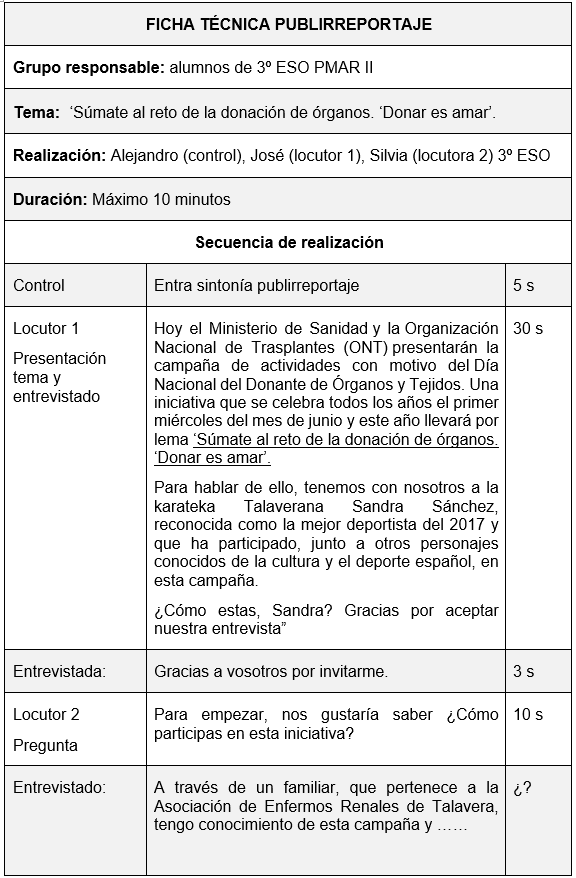
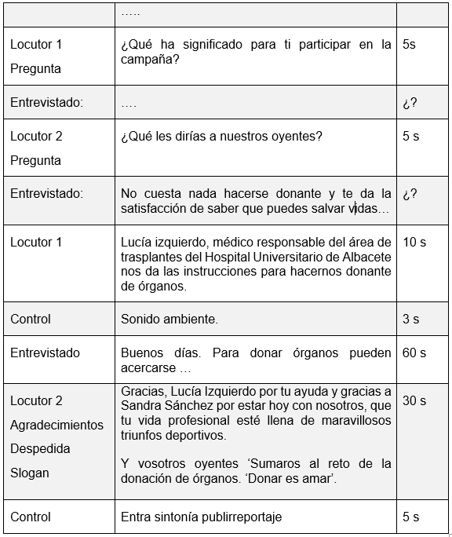

Es un espacio de corta duración (aproximadamente 10 minutos), que tiene apariencia de reportaje, pero realmente es un espacio publicitario que promueve la compra de un producto o servicio.
Un publirreportaje puede adoptar diferentes formas: noticia, entrevistas, datos de encuestas, opinión de personas relacionadas con el producto o servicio que se publicita, etc.
Deberá ser identificado como publicidad delimitándose claramente el espacio, ya sea mediante la actitud del locutor o con la introducción de una sintonía diferenciada.
Objetivo
Ser una herramienta de comunicación para promocionar un producto o servicio mediante un reportaje. Su contenido prioriza la información del producto o servicio, procurando que el mensaje sea atractivo para la audiencia.
Elementos principales
Para conseguir un buen publirreportaje debemos tener en cuenta:
La idea
Es el mensaje central de la comunicación, la idea con la cual el oyente se tiene que quedar. Hay que plantearse a quién va dirigido y para qué. Seleccionar un tema de interés para los oyentes, que debe ser un tema de actualidad.
Se puede aprovechar una idea relacionada con una campaña de concienciación, anunciar la creación de una empresa o marca, pero también el lanzamiento de un producto o servicio, un aniversario, una promoción especial, etc. Hay que contar una historia en la que se describe lo que un producto o servicio puede ofrecer.
Información que sostenga la idea
Sin que parezca un informativo, el publirreportaje suele tener un anclaje en la actualidad informativa o en datos que den pie a este microespacio, por lo que se presenta el mensaje del anunciante dándole la apariencia de una noticia.
Se puede integrar una entrevista con alguna persona con argumento de autoridad, que aporte datos informativos, que explique en un tono distendido lo que se quiere comunicar.
La opinión de los clientes siempre es importante por lo que se puede incluir cortes de la ciudadanía opinando sobre el tema. Se trata de contextualizar una publicidad en la realidad del público oyente, lo que aporta al mensaje una apariencia de información.
Sintonía
de introducción del espacio publicitario. Se delimita claramente el espacio mediante la actitud del locutor, la voz y el tono estarán a medio camino entre la publicidad y la transmisión de información.
Se puede incluir música y además resulta apropiado que haya una sintonía que ponga en aviso al oyente de que está escuchando un mensaje publicitario.
Mensaje
Escoge un eslogan que cierre el publirreportaje y concrete el mensaje final. Un mensaje será efectivo si el oyente lo entiende y genera la acción esperada en la audiencia.
Fases
Realiza un guión previo y dinámico, donde se detallen todos los pasos a seguir.
El guión es el instrumento que sirve para planificar cualquier programa radiofónico (incluido el publirreportaje) y, especialmente, para prever todo el material sonoro que será necesario para su producción.
Además, el guión es la pieza clave para que locutores y técnicos de sonido se entiendan y sepan qué es lo que configura un espacio en cada momento.

